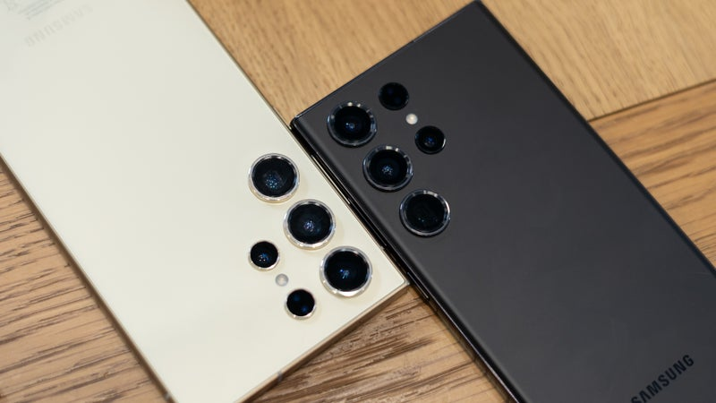

Samsung Galaxy S24 Ultra vs Galaxy S23 Ultra: Evolution is a Slow Process
Galaxy S24 Ultra vs S23 Ultra Showdown
Well, the Galaxy S24 Ultra is now official, proudly waving its titanium design in our faces. Succeeding the Galaxy S23 Ultra is a pure Android flagship phone that heavily relies on AI and comes with a faster processor, much brighter and finally flat screen, a different camera setup, and finally, higher price.
But should you consider upgrading from the Galaxy S23 Ultra? If cooler heads prevail, you'd probably be wise to hold off on upgrading, as the differences in-between such close device generations are not that big. And yet, who's to say the Galaxy S24 Ultra wouldn't be the hottest commodity on the market come 2024?.
What's New in the Galaxy S24 Ultra?
| Specifications | Galaxy S24 Ultra | Galaxy S23 Ultra |
|---|---|---|
| Design | Galaxy S24 Ultra has a new titanium design and most flat corners | A more rounded and flat aluminum design with slightly more curves, about the same size |
| Display | Mostly the same screen with higher 2,600 nits peak brightness | Similarly sized display, lower 1,750-nit peak brightness |
| Processor | Snapdragon 8 Gen 3 in all units across the globe | Snapdragon 8 Gen 2 globally |
| Software | Runs on Android 14 with Samsung One UI 6.1 | Android 14 with One UI 6 |
| RAM | Will come with 12GB RAM in all versions | 12GB RAM in all 256GB, 512GB, and 1TB versions |
| Cameras | Four cameras on the back, including both a 3X zoom and a new 5X telephoto | Four cameras on the back, with a 10X periscope and 3X telephoto |
| S Pen | Comes with S Pen | Also comes with an S Pen |
| Battery | Large 5000mAh battery size | 5000 mAh battry with very decent battery life |
| Software Updates | Seven years of software updates | Four years of software updates |
| Charging | Fast 45W charging and 15W wireless charging as predecessor | 45W max wired charging speed and 15W wireless charging |
| Price | $1,300 starting price, $100 pricier than Galaxy S23 Ultra | $1,200 at lunch |
Design and Size
With the Galaxy S24 Ultra, Samsung keeps same general design language as the Galaxy S23 Ultra, but ditches aluminum in favor of titanium, the premium new material to grace super high-end phones. The display on the Galaxy S24 Ultra is now completely flat, whereas the one on the Galaxy S23 Ultra has a very slight curve to the extreme sides: the Galaxy S24 Ultra is therefore more utilitarian.
Both phones feel excellent in the hand, with the Galaxy S24 Ultra providing a bit more grip thanks to the brushed titanium frame. Yet, let's face it: you'll slap a case on it, so doesn't really matter. There is still an S Pen on the Galaxy S24 Ultra, but there isn't anything new in terms of features in comparison with the Galaxy S23 Ultra. Speaking of features that persist, the IP68 water- and dust-resistance is here to stay.
The Galaxy S24 Ultra colors are Titanium Yellow, Titanium Violet, Titanium Black, and Titanium Gray; the intriguing Titanium Orange, Titanium Green, and Titanium Blue are exclusive to the Samsung.com store. Meanwhile, the Galaxy S23 Ultra is available in Lavender, Cream, Phantom Black, and Green; there are a few more Galaxy S23 Ultra colors exclusively available on Samsung.com.
Display Differences

The Galaxy S24 Ultra doesn't change the essential display specs and comes with the same 6.8-inch LTPO OLED display with a dynamically switching 1-120Hz refresh rate. This makes its screen smooth, vibrant, and gorgeous. In all honesty, the Galaxy S23 Ultra isn't that much different, but it has a slight drawback.
The Galaxy S24 Ultra's display can achieve the super-high peak brightness of 2,600 nits. After two years of mostly staying one step behind most of the competition when it comes to maximum display brightness, Samsung finally joins the eye-scorching club.
This would make the Galaxy S24 Ultra a phone that's perfectly legible in even the brightest environments. It's yet another top Android phone that employs superb peak brightness, just like the OnePlus 12 and the Google Pixel 8 Pro.
No changes in the biometrics department: an ultrasonic fingerprint scanner built into the display is the main biometrics unlocking mechanism of choice on the Galaxy S24 Ultra. Face unlock is also on deck, so generally, no changes in comparison with the Galaxy S23 Ultra.
Camera Differences
Samsung made some radical changes to the camera setup on the back of the Galaxy S24 Ultra. It got rid of the 10X periscope and instead opted for a 5X telephoto camera with significantly improved resolution, enabling optical-grade zoom up to 10X. This is a departure from most previous Galaxy Ultra phones, where the 10X periscope camera was the standout feature delivering 100X Space Zoom. As luck would have it, the Galaxy S24 Ultra's 50MP telephoto still supports 100X Space Zoom.
The main camera on the Galaxy S24 Ultra sticks to 200MP, but boasts more capable software supercharged by AI. Samsung boasts much greater low-light capabilities (Nightography) on the Galaxy S24 Ultra, for example.There's also a plethora of AI features that aim to make the Galaxy S24 Ultra camera experience better than before. Some of these include Magic Eraser, Generative Edits, and improved remaster are coming to the Galaxy S24 Ultra. You can also remove reflections from photos with the power of on-device Galaxy AI.
As a refresher, the Galaxy S23 Ultra came with a 200MP F1.7 main camera, a 10MP 3X F2.4 telephoto, a 10MP 10X F4.9 periscope, and a 12MP ultra-wide camera, along with a 12MP front-facing camera. As far as image quality goes, we have some preliminary camera samples taken with both the Galaxy S24 Ultra and the Galaxy S23 Ultra. These are just to give you a general idea of what each phone is capable of.
Performance and Software
Unlike the Galaxy S24 and Galaxy S24 Plus, the Galaxy S24 Ultra is powered by the Qualcomm Snapdragon 8 Gen 3 for Galaxy in all regions around the globe (the smaller phones only have this one in the US).
Just like the S23 Ultra's Snapdragon 8 Gen 2 for Galaxy chip, which was a slightly spiced-up version chip that most other Android flagships got, the Galaxy S24 Ultra gets a slightly better Snapdragon from the get-go as well.
The Snapdragon 8 Gen 3 for Galaxy is an octa-core affair consisting of a prime Cortex-X4 core running at 3.3GHz, triple high-performance Cortex-A720 3.15GHz cores, dual Cortex-A720 clocked at 2.96GHz, and two efficiency Cortex-A520 cores that hum at 2.27GHz. The chipset will boast the Adreno 750 GPU, which is much faster than the one on the previous Snapdragon generation. Samsung boasts a much better performance in ray-traced graphics, as well as optimization for some of the most popular mobile games out there, good news for gamers worldwide.
In our benchmark tests, the Galaxy S24 Ultra totally dominates its predecessor in both Geekbench 6 and 3DMark Extreme. In real life, however, both phones feel quite snappy, so you might not notice such a large difference between the two devices.
Specifications Comparisons
| Specifications | Galaxy S24 Ultra | Galaxy S23 Ultra |
|---|---|---|
| Size / Weight | 162.3 x 79 x 8.6mm / 233 gr | 163.3 x 78 x 8.9mm / 234 gr |
| Screen | 6.8" OLED 1-120 Hz dynamic 2,600 nits |
6.8" OLED 1-120 Hz dynamic 1,750 nits |
| Processor | Snapdragon 8 Gen 3 for Galaxy | Snapdragon 8 Gen 2 for Galaxy |
| RAM / Storage | 12/256 GB 12/512 GB 12/1 TB LPDDR5X |
8/256 GB 12/256 GB 12/512 GB 12/1 TB LPDDR5X |
| Cameras | 200MP main 12MP ultra 10MP 3X telephoto 50MP 5X periscope 12MP front |
200MP main 12MP ultra 10MP 3X telephoto 10MP 10X periscope 12MP front |
| Battery | 5000 mAh | 5000 mAh |
| Charging | 45W wired 15W wireless Reverse wireless charging |
45W wired 15W wireless Reverse wireless charging |
Is the Galaxy S24 Ultra a Game Changer?

When it comes to breaking the existing state of affairs, the Galaxy S24 Ultra might not be it. The latest Samsung phone touches upon the more important pillars of a great smartphone experience, delivering improved performance, a brighter display, and a camera experience enhanced by AI. However, the core essence of the large S Pen-wielding Samsung flagship remains largely unchanged.
And that's fine: the Galaxy S23 Ultra is easily one of the best phones you could get in 2023, so if the Galaxy S24 Ultra further improves on that, everybody wins. There's slim chance that the Galaxy S24 Ultra won't be another slam-dunk success.